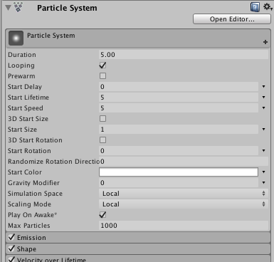

Script interface for Particle Systems.
A powerful and versatile Particle System component.
常规参数
粒子系统的常规参数保存在一个特殊的主模块中。在 Inspector 中，这些参数显示在所有其他模块上方：

在脚本中，可以通过 ParticleSystem.main 访问这些参数。
模块效果乘数
每个模块都有一些特殊的乘数属性，利用这些属性，您可以在不编辑曲线本身的情况下更改曲线的整体效果。这些乘数属性全部以它们影响的曲线命名 - 例如，ParticleSystem.emission.rateMultiplier 控制 ParticleSystem.emission.rate 在给定系统中的整体效果。
常量值的简写表示法
对于简单的常量值，参数支持简写表示法。要为参数设置常量值，只需为其指定一个数字。无需在 ParticleSystemCurveMode.Constant 模式下创建 MinMaxCurve 或 MinMaxGradient 对象。
For example, instead of:
ParticleSystem.emission.rate = new ParticleSystem.MinMaxCurve(5.0f);
write:
ParticleSystem.emission.rate = 5.0f;
Performance note: When setting properties on particle modules, the settings are passed immediately into native code. This gives the best performance. This means that setting properties on a module struct doesn't set something in script that requires setting back to the Particle System; it all happens automatically.
另请参阅：Particle。
| collision | Script interface for the Particle System collision module. |
| colorBySpeed | Script interface for the Particle System color by lifetime module. |
| colorOverLifetime | Script interface for the Particle System color over lifetime module. |
| customData | Script interface for the Particle System Custom Data module. |
| emission | Script interface for the Particle System emission module. |
| externalForces | Script interface for the Particle System external forces module. |
| forceOverLifetime | Script interface for the Particle System force over lifetime module. |
| inheritVelocity | Script interface for the Particle System velocity inheritance module. |
| isEmitting | Determines whether the Particle System is emitting particles. A Particle System may stop emitting when its emission module has finished, it has been paused or if the system has been stopped using Stop with the StopEmitting flag. Resume emitting by calling Play. |
| isPaused | Determines whether the Particle System is paused. |
| isPlaying | Determines whether the Particle System is playing. |
| isStopped | Determines whether the Particle System is stopped. |
| lights | Script interface for the Particle System Lights module. |
| limitVelocityOverLifetime | Script interface for the Particle System Limit Velocity over Lifetime module. |
| main | Access the main Particle System settings. |
| noise | Script interface for the Particle System Noise module. |
| particleCount | 当前粒子数（只读）。 |
| proceduralSimulationSupported | Does this system support Procedural Simulation? |
| randomSeed | Override the random seed used for the Particle System emission. |
| rotationBySpeed | Script interface for the Particle System Rotation by Speed module. |
| rotationOverLifetime | Script interface for the Particle System Rotation over Lifetime module. |
| shape | Script interface for the Particle System Shape module. |
| sizeBySpeed | Script interface for the Particle System Size by Speed module. |
| sizeOverLifetime | Script interface for the Particle System Size over Lifetime module. |
| subEmitters | Script interface for the Particle System Sub Emitters module. |
| textureSheetAnimation | Script interface for the Particle System Texture Sheet Animation module. |
| time | 播放位置（以秒为单位）。 |
| trails | Script interface for the Particle System Trails module. |
| trigger | Script interface for the Particle System Trigger module. |
| useAutoRandomSeed | 控制粒子系统是否使用自动生成的随机数作为随机数生成器的种子。 |
| velocityOverLifetime | Script interface for the Particle System Velocity over Lifetime module. |
| Clear | Remove all particles in the Particle System. |
| Emit | 立即发射 count 个粒子。 |
| GetCustomParticleData | 获取自定义每粒子数据流。 |
| GetParticles | Gets the particles of this Particle System. |
| IsAlive | Does the Particle System contain any live particles, or will it produce more? |
| Pause | 暂停系统，因此不再发射新粒子，也不再更新现有粒子。 |
| Play | Starts the Particle System. |
| SetCustomParticleData | 设置自定义每粒子数据流。 |
| SetParticles | Sets the particles of this Particle System. |
| Simulate | Fast-forwards the Particle System by simulating particles over the given period of time, then pauses it. |
| Stop | Stops playing the Particle System using the supplied stop behaviour. |
| TriggerSubEmitter | 在粒子系统的所有粒子上触发指定的子发射器。 |
| gameObject | 此组件附加到的游戏对象。始终将组件附加到游戏对象。 |
| tag | 此游戏对象的标签。 |
| transform | 附加到此 GameObject 的 Transform。 |
| hideFlags | Should the object be hidden, saved with the Scene or modifiable by the user? |
| name | 对象的名称。 |
| BroadcastMessage | 调用此游戏对象或其任何子项中的每个 MonoBehaviour 上名为 methodName 的方法。 |
| CompareTag | 此游戏对象是否使用 tag 进行了标记？ |
| GetComponent | 如果游戏对象附加了类型为 type 的组件，则将其返回，否则返回 null。 |
| GetComponentInChildren | 使用深度首次搜索返回 GameObject 或其任何子项中类型为 type 的组件。 |
| GetComponentInParent | 返回 GameObject 或其任何父项中类型为 type 的组件。 |
| GetComponents | 返回 GameObject 中类型为 type 的所有组件。 |
| GetComponentsInChildren | 返回 GameObject 或其任何子项中类型为 type 的所有组件。 |
| GetComponentsInParent | 返回 GameObject 或其任何父项中类型为 type 的所有组件。 |
| SendMessage | 调用此游戏对象中的每个 MonoBehaviour 上名为 methodName 的方法。 |
| SendMessageUpwards | 调用此游戏对象中的每个 MonoBehaviour 上或此行为的每个父级上名为 methodName 的方法。 |
| GetInstanceID | 返回对象的实例 ID。 |
| ToString | 返回 GameObject 的名称。 |
| Destroy | 删除 GameObject、组件或资源。 |
| DestroyImmediate | 立即销毁对象 /obj/。强烈建议您改用 Destroy。 |
| DontDestroyOnLoad | Do not destroy the target Object when loading a new Scene. |
| FindObjectOfType | 返回第一个类型为 type 的已加载的激活对象。 |
| FindObjectsOfType | 返回所有类型为 type 的已加载的激活对象的列表。 |
| Instantiate | 克隆 original 对象并返回克隆对象。 |
| bool | 该对象是否存在？ |
| operator != | 比较两个对象是否引用不同的对象。 |
| operator == | 比较两个对象引用，判断它们是否引用同一个对象。 |